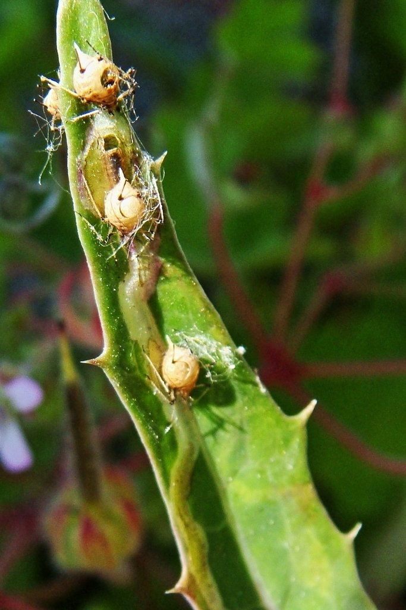

← Toutes les fiches · Auxiliaire · insecte
Aphidius colemani

Guêpe parasitoïde : elle n'a besoin que d'un hôte pour se développer et le tue en vivant dans son corps. Plusieurs espèces d'Aphidius sont vendues. Aphidius colemani est efficace contre le puceron du melon et le puceron vert du pêcher, mais pas contre le puceron de la digitale ni le puceron de la pomme de terre, pour lesquels Aphidius ervi est le meilleur choix. Développement de l'œuf à l'adulte en 10 jours environ à 25 °C et 14 jours à 21 °C.
Conditions optimales : 18 à 25 °C et 80 % d'humidité relative. N'entre pas en diapause : peut agir toute l'année. En été, d'autres guêpes peuvent parasiter Aphidius et réduire son effet.
Suivre les populations de pucerons sur le jeune feuillage après les lâchers.
Proies : pucerons. Aphidius colemani : puceron du melon et puceron vert du pêcher.
Aphidoletes et les coccinelles servent en complément dans les foyers.
Fiche du guide Parcelle, version 2026-11-15b. Aucune recommandation de traitement. Les publications de l'Ontario sont écrites pour l'Ontario.